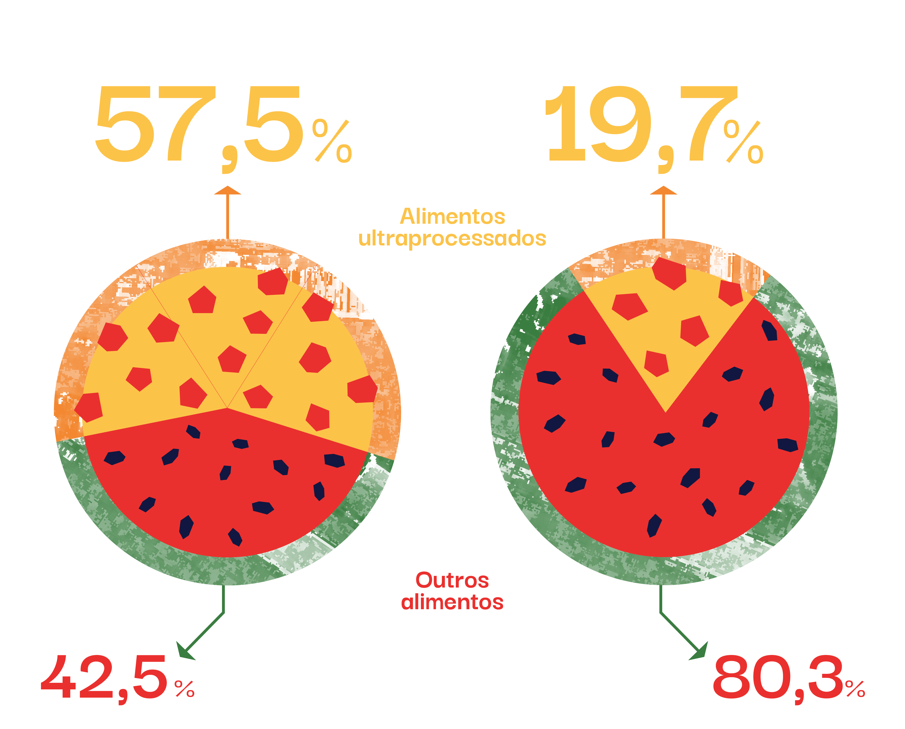

Para uma melhor experiência, acesse a história em seu
desktop.
Epidemia de obesidade e as DCNT
As causas da obesidade em indivíduos e populações
O problema dos ultraprocessados
Custos e Sobrecarga no SUS
Políticas públicas para a saúde coletiva
Equipe e Referências
A
EPIDEMIA
DE
OBESIDADE
E AS
DCNT
Causas, custos e sobrecarga no SUS
No Brasil, a prevalência de excesso de peso aumentou de
42,6% em
2006 para
55,4% em
2019.
Projeções indicam que em
2030 pode
chegar a 68%.
Estimativas que preocupam ao considerarmos o risco
associado de diversas Doenças Crônicas não
Transmissíveis e, consequentemente, os impactos no
Sistema Único de Saúde.
OU
Por muito tempo, o foco no controle do sobrepeso e da obesidade
tem sido direcionado às escolhas individuais. Contudo, ao
entendermos o seu comportamento de epidemia, podemos ter ações
mais assertivas para cuidar da saúde da população. No Brasil, o
número de pessoas vivendo com sobrepeso ou obesidade tem
crescido de modo expressivo.
Projeções para 2030 indicam que
68% da população poderá estar
com excesso de peso
e 26% com obesidade.
Estimativas que preocupam ao considerarmos que o excesso de peso e obesidade
aumentam o risco de diversas Doenças Crônicas não Transmissíveis
(DCNT) e, consequentemente, têm grandes impactos no Sistema
Único de Saúde (SUS).
Epidemia de
obesidade e as DCNT
Ao contrário de outros fatores de risco para o
desenvolvimento de Doenças Crônicas Não Transmissíveis
(DCNT), a porcentagem da população que apresenta excesso de
peso ou obesidade cresce de forma preocupante e epidêmica.
“A morte em idade avançada é inevitável, mas a morte
prematura não o é”
Richard Doll, 1994
As DCNT são doenças multifatoriais, isto é, são causadas
por diversos fatores de risco, apresentam longos
períodos de latência e afetam pessoas por muitos anos,
até mesmo décadas, podendo resultar em incapacidades
funcionais. Exemplos de DCNT são as doenças
cardiovasculares, doenças respiratórias crônicas, as
neoplasias (cânceres) e a diabetes mellitus.
Em 2019, elas foram responsáveis por
55% das 738.371 mortes de
adultos no Brasil. Dessas, 173.207, ou
56,1%, ocorreram entre 30 e 69 anos
de idade e, portanto, são consideradas
prematuras e evitáveis.
Os
principais fatores
de risco para DCNT são tabagismo, consumo abusivo de
álcool, alimentação não saudável e inatividade física.
Além disso, há fatores de
risco metabólicos, como hipertensão (pressão arterial elevada),
hiperglicemia (glicose elevada no sangue) e excesso de
peso/obesidade.
Alguns fatores de risco para DCNT têm reduzido nos
últimos anos, como é o caso do
tabagismo.
Entre 1989 e 2019, uma série de políticas públicas
reduziu de 34,8% para 12,6% a porcentagem de fumantes no
Brasil.
Outros fatores de risco, no entanto, têm apresentado
tendência de
aumento preocupante, como
é o caso do
excesso de peso e da obesidade.
O acúmulo excessivo de gordura corporal está associado
com o aumento no risco de mais de 30 DCNT, em maior ou
menor grau.
Ao lado, entenda a porcentagem dessas 30 DCNT que foram
causadas pelo excesso de peso e obesidade no Brasil em
2019:
A prevalência de obesidade (porcentagem de pessoas, em
um período e local, que apresentam esse quadro clínico)
No mundo...
triplicou entre 1975 e
2016, chegando a 36% das pessoas com excesso de peso e
13% com obesidade.
...e no Brasil
Entre 2006 e 2019, a prevalência de excesso de peso
aumentou de 42,6% para 55,4% da população. Para a
obesidade, essa mudança foi de 11,8% para 20,3%.
Se nada for feito, projeções para 2030 indicam que esses
valores podem alcançar
68% para o excesso de peso e 26% para a
obesidade.
Mudanças efetivas nesse quadro só podem ser alcançadas com a
melhor compreensão e ação sobre as causas da obesidade. É
neste ponto que nossa perspectiva deve ser ampliada para que
possamos pensar em prevenção da obesidade na população.
As causas da obesidade em indivíduos e populações
Estratégias de prevenção da obesidade devem priorizar o
controle das causas da obesidade em populações, ou seja, as
causas que influenciam e explicam o aumento da prevalência
da obesidade, em detrimento das causas da obesidade em
indivíduos.
Por que uma pessoa desenvolve obesidade?
Diversos fatores têm sido descritos na literatura, como
a alimentação não saudável, inatividade física, privação
de sono, predisposição genética,
o uso de medicamentos,
questões hormonais, estresse, obesidade materna, entre
outros.
Alguns desses fatores são
individuais,
enquanto outros são
compartilhados
por indivíduos de uma mesma população.
É comum que estratégias de prevenção à obesidade tratem
comportamentos populacionais -
alimentação
e
atividade física, por exemplo - como escolhas individuais.
Essas abordagens, assim como as que focam apenas em
fatores relacionados às causas em indivíduos, são
inadequadas para explicar e prevenir a obesidade como
uma epidemia.
Por exemplo, fatores genéticos aumentam a predisposição à
obesidade em indivíduos, mas a genética não muda
drasticamente em poucos anos ou décadas e, portanto, não
poderia explicar o aumento na obesidade em populações ao
longo dos últimos anos.
Para identificar as causas da obesidade em populações, ou
seja, a influência dos fatores compartilhados pelos
indivíduos, precisamos olhar para a grande variabilidade da
prevalência de obesidade entre países, regiões e ao longo do
tempo.
Quando uma população que divide hábitos culturais entre si
tem uma prevalência de obesidade maior do que outra
população, com hábitos diferentes, temos um indício da
influência do comportamento coletivo sobre as pessoas.
Um bom exemplo, e para o qual há muitos dados, é o dos
Estados Unidos.
Entre 1960 e 1970, a prevalência de obesidade nos EUA se
mantinha estável entre todos os estratos etários da
população.
No entanto, a partir de 1975, pode-se observar um
rápido aumento desse percentual.
O que aconteceu que poderia explicar essa mudança?
Causas individuais dificilmente teriam essa influência na
população em tão pouco tempo, seja por fatores genéticos ou
pela predisposição de cada pessoa a se exercitar ou ter uma
alimentação saudável.
Entretanto, alguns eventos da década de 1970 afetaram a dieta
da população dos EUA de forma coletiva:
Mudanças nas leis agrícolas no país;
Marketing acelerado;
Disponibilidade e acesso a alimentos com alto teor
calórico; e
Introdução no sistema alimentar de adoçantes como xarope
de milho, com alto teor de frutose.
A maioria dos países têm passado por mudanças importantes no
sistema alimentar, com consequências na mudança no padrão da
dieta. E é dentro desse contexto de mudança que surge a
preocupação com os alimentos ultraprocessados.
O problema dos ultraprocessados
Estudos epidemiológicos têm mostrado uma associação entre
consumo de alimentos ultraprocessados e o aumento no risco
da obesidade e diversas DCNT.
Os ultraprocessados não são propriamente comida de
verdade. Esses produtos são
formulações de origem e uso industriais, obtidas por meio do fracionamento de alimentos
in natura (ou minimamente processados, a exemplo
do açúcar, óleos e gorduras), nas quais utilizam-se
corantes, aromatizantes, emulsificantes e outros
aditivos que os tornam hiper palatáveis. São produtos
com baixo custo de produção, prontos para consumo e com
alto tempo de prateleira, feitos para potencializar o
lucro.
A percepção de que os alimentos poderiam ser
classificados em relação ao nível, extensão e propósito
do processamento surgiu no Brasil no final dos anos
2000, na forma da
classificação NOVA.
Antes, os alimentos eram classificados como fontes de
nutrientes específicos, independentemente do seu
processamento.
Segundo a NOVA, os alimentos podem ser classificados em
4 grandes grupos:
Clique sobre os ícones para saber mais sobre os
grupos.
Dados de produção de ultraprocessados (diretamente
relacionado com o consumo) indicam um crescimento
de:
+43,7% no mundo
+48,0% na América Latina
Entre os anos de 2000 e 2013

Nos EUA, onde a participação dos alimentos
ultraprocessados no total calórico é de 57,5%, a
prevalência de obesidade já chegou a 43%.
Já no Brasil, onde ainda temos uma cultura alimentar
alicerçada em alimentos in natura e minimamente
processados (arroz e feijão), essa participação é de
19,7%.
Mas nossos hábitos também estão mudando.
Caso o país siga a tendência mundial, o nosso arroz e feijão
rotineiro pode perder mais espaço para os produtos
ultraprocessados, com sérias implicações para a saúde de
nossa população e para o SUS.
Custos e Sobrecarga no SUS
A epidemia de obesidade indica que as escolhas individuais
têm pouca relevância enquanto permanecem limitadas em um
cenário de mudança do sistema alimentar. Com a população
exposta a cada vez mais alimentos ultraprocessados, temos um
cenário agravante de custos atrelados ao cuidado e às perdas
ocasionadas pelas DCNT.
Gastos hospitalares e ambulatoriais vêm crescendo de
forma expressiva no Brasil nos últimos anos. No contexto
de
recursos limitados e finitos
disponíveis, é uma necessidade premente o controle da
epidemia de obesidade no país, através do direcionamento
de recursos para o custeio de
programas de promoção de saúde e controle das
doenças.
Em 2019, o gasto anual direto com doenças crônicas não
transmissíveis no Brasil foi de R$ 6,8 bilhões. Em sua
pesquisa, o grupo liderado pelo professor Leandro
Rezende, da Escola Paulista de Medicina da Universidade
Federal de São Paulo (EPM/UNIFESP), estimou que 22%
desse valor, R$ 1,5 bilhão, podem ser atribuíveis ao
excesso de peso e obesidade. Os custos atribuíveis foram
mais elevados nas mulheres (R$ 762 milhões) do que nos
homens (R$ 730 milhões).
R$ 6,8 bi
de gasto anual direto com doenças crônicas não
transmissíveis no Brasil
R$ 1,5 bi
podem ser atribuíveis ao excesso de peso e obesidade
- 22% do gasto anual
O excesso de peso e obesidade expressos em números
em 2019.
Identificamos gasto anual direto de
R$ XX,X relacionados
às doenças crônicas não transmissíveis. Destes,
R$ XX,X (XX%) podem ser atribuídos ao excesso de peso e obesidade.
Além de:
XXXXXX mortes,
XXXXXX
hospitalizações e
XXXXXX
procedimentos ambulatoriais realizados pelo SUS,
atribuíveis ao excesso de peso e obesidade.
Ao lado, escolha a informação pela qual deseja ordenar
os dados e clique nos grupos de doenças para ver mais
detalhes.
ao excesso de peso e obesidade, em 2019, nos estados e
no Distrito Federal.
No mapa ao lado, passe o cursor sobre os estados para ver mais detalhes.
Políticas públicas para a
saúde coletiva
Estratégias de identificação e controle das causas
populacionais que levam à obesidade devem ser prioridade da
ação dos gestores. Se os fatores determinantes de aumento da
prevalência da obesidade são populacionais, a estratégia de
prevenção precisa ser social e coletiva, por meio de
políticas públicas eficazes.
Diante deste cenário pessimista e das implicações que
ele tem sobre o SUS, o Ministério da Saúde do Brasil, em
seu recém publicado “Plano de Ações Estratégicas para
enfrentamento das DCNT no Brasil (2021-2030)” estipulou
a meta de
deter o crescimento da obesidade em adultos no país
até 2030.
Essa meta dificilmente será alcançada sem ações,
programas e políticas públicas voltadas às
causas da obesidade na
população e do seu impacto na incidência de DCNT.
Se os fatores determinantes de aumento da
prevalência da obesidade são populacionais, a
estratégia precisa ser social e coletiva, por meio
de Políticas Públicas eficazes.
Existem diversas políticas públicas e leis que
necessitam ser implementadas, facilitando a escolha por
alimentos saudáveis na hora das compras e do consumo,
por exemplo:
Reforma tributária do sistema alimentar;
Tributação de alimentos ultraprocessados, como
bebidas açucaradas;
Informação nutricional mais clara e simples no
rótulo dos produtos;
Regras para a publicidade de alimentos,
principalmente para crianças;
Ampliação do acesso a alimentos orgânicos;
Restrição do uso de agrotóxicos.
Entenda algumas estratégias importantes que podem ser
tomadas por cada setor:
No Brasil, o
Guia Alimentar para a População Brasileira
(2014) constitui uma das estratégias para implementação
da diretriz de promoção da alimentação adequada e
saudável que integra a Política Nacional de Alimentação
e Nutrição (PNAN).
Os guias alimentares são uma tecnologia de saúde
essencial para a melhora dos padrões de alimentação e
nutrição e para a promoção da saúde das populações, uma
vez que os hábitos alimentares e as condições de saúde
se modificam ao longo do tempo, por diversos fatores.
Nesse sentido, o Guia Alimentar para a população
brasileira é considerado um mediador, ou seja, uma
ferramenta orientadora para políticas públicas que devem
se adequar às necessidades da população.
Conheça as recomendações do guia alimentar para a saúde da
população brasileira:
Brasil. Ministério da Saúde. Secretaria de Vigilância em
Saúde. Departamento de Análise em Saúde e Vigilância de
Doenças Não Transmissíveis. Plano de Ações Estratégicas
para o Enfrentamento das Doenças Crônicas e Agravos não
Transmissíveis no Brasil, 2021-2030. Ministério da
Saúde, Secretaria de Vigilância em Saúde, Departamento
de Análise em Saúde e Vigilância de Doenças Não
Transmissíveis. – Brasília: Ministério da Saúde, 2021.
INCA. Dados e números da prevalência do tabagismo.
Acesso em 19/10/2021:
https://www.inca.gov.br/observatorio-da-politica-nacional-de-controle-do-tabaco/dados-e-numeros-prevalencia-tabagismo
World Health Organization. Obesity. Acesso em
19/10/2021: https://www.who.int/health-topics/obesity
Ministério da Saúde. Secretaria de Vigilância em Saúde.
Departamento de Análise em Saúde e Vigilância de Doenças
Não Transmissíveis. Vigitel Brasil 2019 : vigilância de
fatores de risco e proteção para doenças crônicas por
inquérito telefônico : estimativas sobre frequência e
distribuição sociodemográfica de fatores de risco e
proteção para doenças crônicas nas capitais dos 26
estados brasileiros e no Distrito Federal em 2019.
Ministério da Saúde, Secretaria de Vigilância em Saúde,
Departamento de Análise em Saúde e Vigilância de Doenças
não Transmissíveis. Brasília: Ministério da Saúde, 2020.
Geoffrey Rose, Sick individuals and sick populations,
International Journal of Epidemiology, Volume 30, Issue
3, June 2001, Pages 427–432,
https://doi.org/10.1093/ije/30.3.427. Disponível em:
https://academic.oup.com/ije/article/30/3/427/736897
Acesso em 23 de outubro de 2021.
Bleich S, Cutler D, Murray C, Adams A. Why is the
developed world obese?. Annu Rev Public Health.
2008;29:273-295.
doi:10.1146/annurev.publhealth.29.020907.090954
Rodgers, Anthony; Woodward, Alistair; Swinburn, Boyd;
Dietz, William H. Prevalence trends tell us what did not
precipitate the US obesity epidemic . The Lancet, vol 3,
2018. Disponível em:
https://www.thelancet.com/journals/lanpub/article/PIIS2468-2667(18)30021-5/fulltext
Acesso em 23 de outubro de 2021.
Geoffrey Rose, Sick individuals and sick populations,
International Journal of Epidemiology, Volume 30, Issue
3, June 2001, Pages 427–432,
https://doi.org/10.1093/ije/30.3.427. Disponível em:
https://academic.oup.com/ije/article/30/3/427/736897
Acesso em 23 de outubro de 2021.
Pan American Health Organization. Ultra-processed food
and drink products in Latin America: Sales, sources,
nutrient profiles, and policy implications. Washington,
D.C.: PAHO; 2019.
https://iris.paho.org/handle/10665.2/51094
Martini D, Godos J, Bonaccio M, Vitaglione P, Grosso G.
Ultra-Processed Foods and Nutritional Dietary Profile: A
Meta-Analysis of Nationally Representative Samples.
Nutrients. 2021;13(10):3390. Published 2021 Sep 27.
doi:10.3390/nu13103390
https://www.cdc.gov/obesity/data/adult.html.
Askari M, Heshmati J, Shahinfar H, Tripathi N, Daneshzad
E. Ultra-processed food and the risk of overweight and
obesity: a systematic review and meta-analysis of
observational studies. Int J Obes (Lond).
2020;44(10):2080-2091. doi:10.1038/s41366-020-00650-z
Brasil. Ministério da Saúde. Secretaria de Atenção à
Saúde. Departamento de Atenção Básica. Guia alimentar
para a população brasileira. 2. ed. Brasília: Ministério
da Saúde, 2014.
https://www.fsp.usp.br/nupens/o-que-e-o-guia-alimentar/
Brasil. Ministério da Saúde. Secretaria de Atenção à
Saúde. Departamento de Atenção Básica. Guia alimentar
para a população brasileira / Ministério da Saúde,
Secretaria de Atenção à Saúde, Departamento de Atenção
Básica. – 2. ed., 1. reimpr. – Brasília : Ministério da
Saúde, 2014. 156 p. : il Disponível em:
https://bvsms.saude.gov.br/bvs/publicacoes/guia_alimentar_populacao_brasileira_2ed.pdf
Acesso em 25 de outubro de 2021.
Brasil. Ministério da Saúde. Secretaria de Atenção à
Saúde. Departamento de Atenção Básica. Política Nacional
de Alimentação e Nutrição / Ministério da Saúde,
Secretaria de Atenção à Saúde. Departamento de Atenção
Básica.Básica. – 1. ed., 1. reimpr. – Brasília :
Ministério da Saúde, 2013. 84 p. : il Disponível em:
https://bvsms.saude.gov.br/bvs/publicacoes/politica_nacional_alimentacao_nutricao.pdf
Acesso em 25 de outubro de 2021.
Brasil. Agência Nacional de Vigilância Sanitária. Anvisa
disponibiliza arquivos com modelos para rotulagem
nutricional (2021). Disponível em:
https://www.gov.br/anvisa/pt-br/assuntos/noticias-anvisa/2021/anvisa-disponibiliza-arquivos-com-modelos-para-rotulagem-nutricional
Acesso em 29 de outubro de 2021
ACT promoção da saúde. Tributação de bebidas adoçadas
(s.a.a). Disponível em:
https://actbr.org.br/tributacao-de-bebidas-adocadas
Acesso em 22 de outubro de 2021.
Brasil. Ministério da Saúde. Secretaria de Atenção à
Saúde. Departamento de Atenção Básica. Guia alimentar
para a população brasileira / Ministério da Saúde,
Secretaria de Atenção à Saúde, Departamento de Atenção
Básica. – 2. ed., 1. reimpr. – Brasília : Ministério da
Saúde, 2014. 156 p. : il Disponível em:
https://bvsms.saude.gov.br/bvs/publicacoes/guia_alimentar_populacao_brasileira_2ed.pdf
Acesso em 25 de outubro de 2021.
Brasil. Ministério da Saúde. Secretaria de Atenção
Primária à Saúde. Departamento de Promoção da Saúde.
Guia de Atividade Física para a População Brasileira
[recurso eletrônico] / Ministério da Saúde, Secretaria
de Atenção Primária à Saúde, Departamento de Promoção da
Saúde. – Brasília : Ministério da Saúde, 2021. 54 p.: il
Disponível em:
https://bvsms.saude.gov.br/bvs/publicacoes/guia_atividade_fisica_populacao_brasileira.pdf